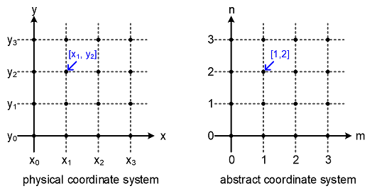
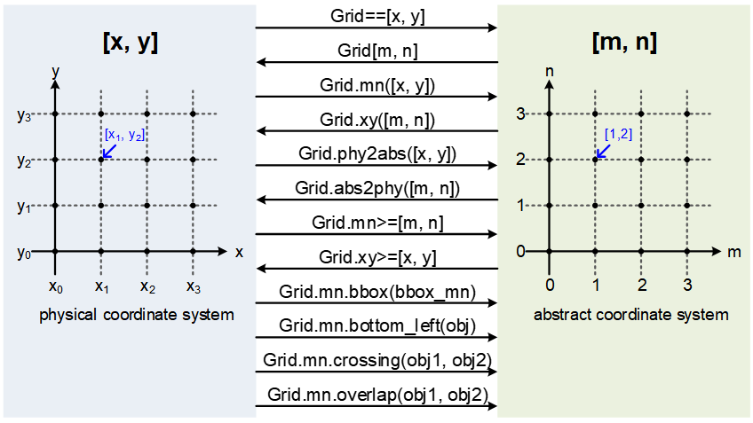
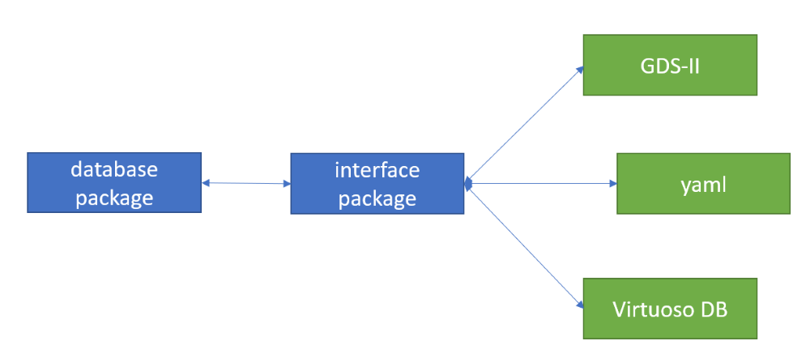

laygo2 Structure#
laygo2 is composed of the following three sub-packages.
object package implements various physical and abstract objects that compose layouts.
interface package handles various interactions between laygo2 and external objects (EDA tools, data structures, files).
util package contains useful functions for other sub-packages.
Brief explanations on the sub-packages can be found in the following sections, and check the API reference for details on key classes and functions.
object package#
The object package includes various classes for physical and abstract objects. The folowing modules compose the object package:
physical module is defining classes for physical objects that compose actual IC layout.
template module describes classes for templates that generate various instance objects for target technology and design parameters.
grid module describes grid classes to abstract placement and routing coordinates. parameterizations.
database module implements classes for design hierarchy management.
The following figure illustrates a UML diagram of the object package.

physical module#
The physical module implments classes for physical layout objects. Here are the summary of classes in the physical module:
PhysicalObject is the base class for physical objects.
IterablePhysicalObject(PhysicalObject) is the base class for ‘iterable’ physical objects (such as arrays and groups).
PhysicalObjectGroup(IterablePhysicalObject) is a dedicated class for groups of physical objects (not implemented yet).
Rect(PhysucalObject) is for rect objects.
Path(PhysicalObject) is for path objects.
Pin(IterablePhysicalObject) is for pin objects.
Text(PhysicalObject) is for text objects.
Instance(IterablePhysicalObject) is for instances.
VirtualInstance(IterablePhysicalObject) is for virtual instances (a group of objects that acts as a single instance).
The following figure illustrates examples of the physical objects from one of the classes.

PhysicalObject class#
PhysicalObject class implements basic physical objects and their operations, with their properties and methods introduced here:
Major attributes
name: str, the name of the object.
xy: numpy.ndarray(np.int), the position of the object, in physical(xy) coordinate.
bbox: numpy.ndarray(np.int), the bounding box of the object.
master: PhysicalObject or None, (if the object is an element of another object) the object’s master object.
params: Dict, the object’s properties.
pointers: Dict, major points (coordinates) related to the object.
left, right, top, bottom, center, bottom_left, bottom_right, top_left, top_right: numpy.ndarray(np.int), major points (coordinates) related to the object.
Major methods
__init__(xy, name, params=None): constructor.
IterablePhysicalObject class#
IterablePhysicalObject class implements iterable and/or arrayed objects with attributes and methods described as follows:
Major attributes
name: Refer to PhysicalObject.
xy: Refer to PhysicalObject.
bbox: Refer to PhysicalObject.
master: Refer to PhysicalObject.
params: Refer to PhysicalObject.
pointers: Refer to PhysicalObject.
left, right, top, bottom, center, bottom_left, bottom_right, top_left, top_right: Refer to PhysicalObject.
elements: numpy.ndarray(PhysicalObject), the elements of the object.
shape: numpy.ndarray(np.int), the shape of the elements.
Major methods
__init__(xy, name=None, params=None, elements=None): constructor.
ndenumerate(): run ndenumerate() over the object’s elements.
PhysicalObjectGroup class#
(To be implemented) PhysicalObjectGroup class implements a group of physical objects.
Rect class#
Rect class implements rectangular objects.
Major attributes
name: refer to PhysicalObject.
xy: np.ndarray(dtype=np.int), xy-coordinate values of bottom-left top-right corners.
bbox: refer to PhysicalObject.
master: refer to PhysicalObject.
params: refer to PhysicalObject.
pointers: refer to PhysicalObject.
left, right, top, bottom, center, bottom_left, bottom_right, top_left, top_right: refer to PhysicalObject.
layer: [str, str], the layer information of the object.
netname: str, the net name of the object.
hextension: int, the extension of the object in horizontal directions.
vextension: int, the extension of the object in vertical directions.
height: int, the height of the object.
width: int, the width of the object.
size: np.array(dtype=np.int), the size [width, height] of the object.
Major methods
__init__(xy, layer, hextension=0, vextension=0, name=None, netname=None, params=None): constructor.
Path class#
Path class implements path objects.
Major attributes
name: refer to PhysicalObject.
xy: np.ndarray(dtype=np.int), the xy-coordinates of the path object.
bbox: refer to PhysicalObject.
master: refer to PhysicalObject.
params: refer to PhysicalObject.
layer: [str, str], the layer information of the path.
netname: str, the net name of the path.
extension: int, the extension of the path.
width: int, the width of the object.
Major methods
__init__(xy, layer, width, extension=0, name=None, netname=None, params=None): constructor.
Pin class#
Pin classes implements pin objects for terminals of designs and instances.
Major attributes
name: refer to IterablePhysicalObject.
xy: the xy-coordinates of bottom-left and top-right corners of the object.
bbox: refer to IterablePhysicalObject.
master: Instance or VirtualInstance, (if the pin object belongs to an instance) the master instance of the pin object.
params: refer to IterablePhysicalObject.
pointers: refer to IterablePhysicalObject.
left, right, top, bottom, center, bottom_left, bottom_right, top_left, top_right: IterablePhysicalObject.
elements: refer to IterablePhysicalObject.
shape: refer to IterablePhysicalObject.
layer: [str, str], the layer information of the object.
netname: str, the net name of the object.
height: int, the height of the object.
width: int, the width of the object.
size: np.array(dtype=np.int), the size of the object.
Major methods
__init__(xy, layer, name=None, netname=None, params=None, master=None, elements=None): constructor.
ndenumerate(): refer to IterablePhysicalObject.
export_to_Dict(): returns a dictionary that contains the object’s information.
Text class#
Text class implements text labels.
Major attributes
name: refer to PhysicalObject.
xy: refer to PhysicalObject.
bbox: refer to PhysicalObject.
master: refer to PhysicalObject.
params: refer to PhysicalObject.
pointers: refer to PhysicalObject.
left, right, top, bottom, center, bottom_left, bottom_right, top_left, top_right: refer to PhysicalObject.
layer: [str, str], the layer information of the object.
text: str, the text information of the object.
Major methods
**__init__(xy, layer, text, name=None, params=None): constructor.
Instance class#
Instance class impelments single instances or instance arrays.
Major attributes
name: refer to IterablePhysicalObject.
xy: the xy-coordinates of bottom-left and top-right corners.
bbox: refer to IterablePhysicalObject.
master: Instance or VirtualInstance, (if the instance belongs to a specific instance) the object’s master instance.
params: refer to IterablePhysicalObject.
pointers: refer to IterablePhysicalObject.
left, right, top, bottom, center, bottom_left, bottom_right, top_left, top_right: IterablePhysicalObject.
elements: refer to IterablePhysicalObject.
shape: refer to IterablePhysicalObject.
libname: str, the library name of the object.
cellname: str, the cell name of the object.
unit_size: np.array(dtype=np.int) the unit-size of the instance, when the instance is an array.
transform: str, the transform parameter of the object.
pins: Dict[Pin], the dictionary that contains the instance’s pins.
xy0: np.array(dtype=np.int), the xy-coordinate values of the object’s primary corner.
xy1: np.array(dtype=np.int), the xy-coordinate values of the object’s secondary corner.
size: np.array(dtype=np.int), the size of the object.
pitch: np.array(dtype=np.int), the pitch between unit-cells of the object.
spacing: same as pitch (introduced to align the notation with GDS-II).
height: int, the height of the object.
width: int, the width of the object.
Major methods
__init__(xy, libname, cellname, shape=None, pitch=None, transform=’R0’, unit_size=np.array([0, 0]), pins=None, name=None, params=None): constructor.
ndenumerate(): refer to IterablePhysicalObject.
VirtualInstance class#
VirtualInstance class implements single virtual instances or virtual instance arrays that are composed of multiple physical objects.
Major attributes
name: refer to IterablePhysicalObject.
xy: the xy-coordinates of bottom-left and top-right corners.
bbox: refer to IterablePhysicalObject.
master: Instance or VirtualInstance, (if the instance belongs to another instance, e.g., unit cell of an instance array) the object’s master instance.
params: refer to IterablePhysicalObject.
pointers: refer to IterablePhysicalObject.
left, right, top, bottom, center, bottom_left, bottom_right, top_left, top_right: IterablePhysicalObject.
elements: refer to IterablePhysicalObject.
shape: refer to IterablePhysicalObject.
libname: refer to Instance.
cellname: refer to Instance.
unit_size: refer to Instance.
transform: refer to Instance.
pins: refer to Instance.
xy0: refer to Instance.
xy1: refer to Instance.
size: refer to Instance.
pitch: refer to Instance.
spacing: refer to Instance.
height: refer to Instance.
width: refer to Instance.
native_elements: Dict[PhysicalObject], the dictionary that contains physical objects that compose the virtual instance. Its key names are the names of the physical objects.
Major methods
__init__(xy, libname, cellname, native_elements, shape=None, pitch=None, transform=’R0’, unit_size=np.array([0, 0]), pins=None, name=None, params=None): constructor.
ndenumerate(): refer to IterablePhysicalObject.
template module#
template module is composed of classes that abstract instances and virtual instances described as follows:
Template is the basic templates class.
NativeInstanceTemplate(Template) is a template class that generates Instance objects.
ParameterizedInstanceTemplate(Template) generates ParameterizedInstance objects with its user-defined bbox function.
UserDefinedTemplate(Template) generates VirtualInstance objects with its bbox / pins / generate functions.
Template class#
Template class implements basic template functions with its attributes and methods described as follows:
Major attributes
name: str, the name of the template.
Major methods
__init__(name): constructor.
height(params=None): returns the height of the template corresponding to params.
width(params=None): returns the width of the template corresponding to params.
size(params=None): returns the size of the template.
bbox(params=None): (abstract method) returns the bounding box of the template.
pins(params=None): (abstract method) returns a dictionary that contains the pins of the template.
generate(name=None, shape=None, pitch=np.array([0, 0]), transform=’R0’, params=None): (abstract method) returns an instance object generated from the template.
NativeInstanceTemplate class#
NativeInstanceTemplate class implements templates that returns basic Instance objects with its attributes and methods described as follows:
Major attributes
name: refer to Template.
libname: str, the library name of the generated instance.
cellname: str, the cell name of the generated instance.
Major methods
__init__(libname, cellname, bbox=np.array([[0, 0], [0, 0]]), pins=None): constructor.
bbox(params=None): refer to Template.
pins(params=None): refer to Template.
generate(name=None, shape=None, pitch=np.array([0, 0]), transform=’R0’, params=None): Template.
export_to_dict(): returns a dictionary that contains the template’s information.
ParameterizedInstanceTemplate class#
ParameterizedInstanceTemplate class implements a template that returns parameterized Instance objects, with its attributes and methods described as follows:
Major attributes
name: refer to Template.
libname: refer to NativeInstanceTemplate.
cellname: refer to NativeInstanceTemplate.
Major methods
UserDefinedTemplate class#
UserDefinedTemplate class implements a template that returns VirtualInstance objects, with its attributes and methods described as follows:
Major attributes
name: refer to Template.
libname: refer to NativeInstanceTemplate.
cellname: refer to NativeInstanceTemplate.
Major methods
grid module#
grid module is composed of classes that implement abstract coordinate systems that are interacting with technology-specific physical coordinate systems.
laygo2 implements the layout designs based on the abstract coordinate system.

Grid module implements the following classes.
CircularMapping: basic circular mapping class.
CircularMappingArray(CircularMapping): a multi-dimensional circular mapping class.
_AbsToPhyGridConverter: an abstract-to-physical coordinate converter class.
_PhyToAbsGridConverter: a physical-to-abstract coordinate converter class.
OneDimGrid(CircularMapping): an one-dimensional grid classes
Grid: a two-dimensional grid classes.
PlacementGrid(Grid): a 2-dimensional grid class for instance placement.
RoutingGrid(Grid): a 2-dimensional grid class for wire routing.
CircularMapping class#
CircularMapping class implements basic circular mappings (their indices extend to the entire axis with cyclic mapping). The following code block shows several examples of using CircularMapping objects.
>>> map = CircularMapping(elements=[100, 200, 300])
>>> print(map[0])
100
>>> print(map[2])
300
>>> print(map[4])
200
>>> print(map[-3])
100
>>> print(map[[2, 3, -2])
[300, 100, 200]
>>> print(map[2:7])
[300, 100, 200, 300, 100]
CircularMapping class contains various attributes and methods described as follows:
Major attributes
dtype: type, the data type of the mapping.
elements: numpy.array(dtype=self.dtype), the array that contains the components of the circular mapping.
shape: numpy.array(dtype=numpy.int), the shape of the circular mapping.
Major methods
__init__(elements, dtype=np.int): constructor.
__getitem__(pos): accesses component(s) of the circular mapping.
__iter__(): the iteration function of the circular mapping.
__next__(): the next element access function of the circular mapping.
CircularMappingArray class#
CircularMappingArray class implements multi-dimensional circular mappings (their indices extend to the entire axis with cyclic mapping) and is used for expressing multi-dimensional arrays with cyclic indexing (e.g. a 2-dim via map). CircularMappingArray includes the following attributes and methods.
Major attributes
dtype: CircularMapping.
elements: refer to CircularMapping.
shape: refer to CircularMapping.
Major methods
__init__(elements, dtype=np.int): refer to CircularMapping.
__getitem__(pos): refer to CircularMapping.
__iter__(): refer to CircularMapping.
__next__(): refer to CircularMapping.
_AbsToPhyGridConverter class#
_AbsToPhyGridConverter is an internal class that converts abstract coordinates to physical coordinates. It also supports reverse conversions (physical-to-abstract) with comparison operators (which requires its pair converter class, _PhyToAbsGridConverter defined in its master grid object).

_AbsToPhyGridConverter class contains various attributes and methods described as follows:
Major attributes
master: OneDimGrid or Grid, the grid object which the object belongs to.
Major methods
__init__(master): constructor.
__getitem__(pos): element access function for the object. Receives the abstract coordinate as its input and converts it to a physical coordinate.
__call__(pos): element access function for the object. Receives the abstract coordinate as its input
__eq__(other), __lt__(other), __le__(other), __gt__(other), __ge__(other): (reverse conversion function) Returns abstract coordinates that meet the comparison operator conditions.
_PhyToAbsGridConverter class#
_PhyToAbsGridConverter is an internal class that converts physical coordinates to abstract coordinates. It also supports reverse conversions (abstract-to-physical) with comparison operators (which requires its pair converter class, _AbsToPhyGridConverter defined in its master grid object).

_PhyToAbsGridConverter class contains various attributes and methods described as follows:
Major attributes
master: OneDimGrid or Grid, the grid object which the object belongs to.
Major methods
__init__(master): constructor.
__call__(pos): element access function. Receives a physical coordinate as its input and converts it to an abstract coordinate.
__getitem__(pos): element access function. Receives a physical coordinate as its input and converts it to an abstract coordinate.
__eq__(other), __lt__(other), __le__(other), __gt__(other), __ge__(other): (reverse conversion function) Returns physical coordinates that meet the comparison operator conditions.
bbox(obj): converts the bounding box of obj to abstract coordinates.
bottom_left(obj): returns the bottom-left corner of obj in abstract coordinate.
bottom_right(obj): returns the bottom-right corner of obj in abstract coordinate.
top_left(obj): returns the top-left corner of obj in abstract coordinate.
top_right(obj): returns the top-right corner of obj in abstract coordinate.
width(obj): returns the width of obj.
height(obj): returns the height of obj.
size(obj): returns the size([width, height]) of obj.
crossing(*args): returns the crossing point of *args in abstract coordinate.
overlap(*args, type=’bbox’): converts the overlap region of *args to abstract coordinates, in the type specified in the type argument. If type=’bbox’, a bounding box corresponding to the overlap region is returned. If type=’array’, all points on the abstract grid inside the bounding box are returned as the form of a 2-d array. If type=’list’, all points on the abstract grid inside the bounding box are returned as the form of a 1-d list.
union(*args): returns the union of *args, in the form of a bounding box.
OneDimGrid class#
OneDimGrid class implements a one-dimensional abstract coordinate system, with the attributes and methods introduced.
Major attributes
name: str, the name of coordinate system.
range: numpy.ndarray(dtype=np.int), the region where the coordinate system is defined. The grid system extends over the defined range, repeating the coordinate values.
phy2abs: _PhyToAbsConverter, a physical-to-abstract coordinate converter.
abs2phy: _AbsToPhyConverter, a abstract-to-physical coordinate converter.
width: int, the width of the range where the grid is defined.
Major methods
__init__(name, scope, elements=np.array([0])): constructor.
__getitem__(pos): element access function. Receives an abstract coordinate and convert it to a physical coordinate.
__eq__(other), __lt__(other), __le__(other), __gt__(other), __ge__(other): Returns a physical coordinate that meets the comparison operation condition.
export_to_dict(): returns a dict that contains the grid’s information.
Grid class#
Grid class implements an abstract coordinate that is mapped to a 2-dimensional physical coordinate system.
The Grid class and its objects support various coordinate conversion functions, with their examples introduced in the following figure.

The grid class contains the following attributes and methods.
Major attributes
name: str, the name of the grid.
range: numpy.ndarray(dtype=np.int), the range where the grid system is defined. The grid system extends over the defined range, repeating the coordinate values.
phy2abs: PhyToAbsConverter, a physical-to-abstract grid converter object.
abs2phy: AbsToPhyConverter, an abstract-to-physical grid converter object.
xy: List[OneDimGrid], a list that contains 1-dimensional grids for x and y axises.
x: OneDimGrid, a one-dimensional grid system in x-axis.
y: OneDimGrid, a one-dimensional grid system in y-axis.
v: same as x.
h: same as y.
mn: same as abs2phy.
width: int, the width of the region where the grid system is defined.
height: int, the height of the region where the grid system is defined.
Major methods
__init__(name, scope, elements=np.array([0])): constructor.
__getitem__(pos): element access function. Receives abstract coordinates and convert them to physical ones.
__eq__(other), __lt__(other), __le__(other), __gt__(other), __ge__(other): returns physical coordinates that meet the comparison conditions.
bbox(obj): refer to _PhyToAbsGridConverter.
bottom_left(obj): refer to _PhyToAbsGridConverter.
bottom_right(obj): refer to _PhyToAbsGridConverter.
top_left(obj): refer to _PhyToAbsGridConverter.
top_right(obj): refer to _PhyToAbsGridConverter.
width(obj): refer to _PhyToAbsGridConverter.
height(obj): refer to _PhyToAbsGridConverter.
size(obj): refer to _PhyToAbsGridConverter.
crossing(*args): refer to _PhyToAbsGridConverter.
overlap(*args, type=’bbox’): refer to _PhyToAbsGridConverter.
union(*args): refer to _PhyToAbsGridConverter.
PlacementGrid class#
PlacementGrid class implements abstract grids for placing Instance and VirtualInstance objects with the attributes and methods described as follows:
Major attributes
name: refer to Grid.
range: refer to Grid.
phy2abs: refer to Grid.
abs2phy: refer to Grid.
xy: refer to Grid.
x: refer to Grid.
y: refer to Grid.
v: refer to Grid.
h: refer to Grid.
mn: refer to Grid.
width: refer to Grid.
height: refer to Grid.
type: str, the type of the grid. Its value should be ‘placement’ for PlacementGrid objects.
Major methods
__init__(name, scope, elements=np.array([0])): constructor.
__getitem__(pos): element access function. Receives abstract coordinates and convert them to physical ones.
__eq__(other), __lt__(other), __le__(other), __gt__(other), __ge__(other): returns physical coordinates that meet the comparison conditions.
bbox(obj): refer to Grid.
bottom_left(obj): refer to Grid.
bottom_right(obj): refer to Grid.
top_left(obj): refer to Grid.
top_right(obj): refer to Grid.
width(obj): refer to Grid.
height(obj): refer to Grid.
size(obj): refer to Grid.
crossing(*args): refer to Grid.
overlap(*args, type=’bbox’): refer to Grid.
union(*args): refer to Grid.
RoutingGrid class#
RoutingGrid class implements abstract grids for routing wires and vias with the attributes and methods described as follows:
Major attributes
name: refer to Grid.
range: refer to Grid.
phy2abs: refer to Grid.
abs2phy: refer to Grid.
xy: refer to Grid.
x: refer to Grid.
y: refer to Grid.
v: refer to Grid.
h: refer to Grid.
mn: refer to Grid.
width: refer to Grid.
height: refer to Grid.
type: str, the type of the grid. Its value should be ‘routing’ for RoutingGrid objects.
vwidth: CircularMapping, the widths of vertical wires.
hwidth: CircularMapping, the widths of horizontal wires.
vextension: CircularMapping, the extensions of vertical wires.
hextension: CircularMapping, the extensions of horizontal wires.
vlayer: CircularMapping, the layer information of vertical wires.
hlayer: CircularMapping, the layer information of horizontal wires.
pin_vlayer: CircularMapping, the layer information of vertical pin wires.
pin_hlayer: CircularMapping, the layer information of horizontal pin wires.
viamap: CircularMappingArray, the array that contains via objects located at the intersection of vertical and horizontal grids.
primary_grid: str, the default direction of wires (the direction of wires with their sizes 0).
Major methods
__init__(name, scope, elements=np.array([0])): constructor.
__getitem__(pos): element access function. Receives abstract coordinates and convert them to physical ones.
__eq__(other), __lt__(other), __le__(other), __gt__(other), __ge__(other): returns physical coordinates that meet the comparison conditions.
bbox(obj): refer to Grid.
bottom_left(obj): refer to Grid.
bottom_right(obj): refer to Grid.
top_left(obj): refer to Grid.
top_right(obj): refer to Grid.
width(obj): refer to Grid.
height(obj): refer to Grid.
size(obj): refer to Grid.
crossing(*args): refer to Grid.
overlap(*args, type=’bbox’): refer to Grid.
union(*args): refer to Grid.
route(mn, direction=None, via_tag=None): the wire routing function. Receives the default direction of wires, and via placement options at the starting, internal, and end points as its arguments.
via(mn=np.array([0, 0]), params=None): the via placement function.
pin(name, mn, direction=None, netname=None, params=None): the pin creation function.
database module#
database module consists classes that implement design hierarchy to manage designs and libraries with its component classes described as follows:
BaseDatabase is the basic database management class.
Library(BaseDatabase) is the library management class.
Design(BaseDatabase) is the design management class.
BaseDatabase class#
BaseDatabase class implements the basic database management functions, with its attributes and methods described as follows:
Major attributes
name: str, the name of the database.
params: dict or None, the database’s parameters.
noname_index: int, the index of unnamed objects added to the database.
keys: list, keys of the dictionary that stores the component objects of the database.
Major methods
items(): the iteration function for its component objects.
__getitem__(pos): element access function for the database.
__setitem__(key, item): element setting function for the database.
append(item): element adding function.
__iter__(): the iteration for the mapping.
__init__(name, params=None, elements=None): constructor.
Library class#
Library class implements the library management functions, with its attributes and methods described as follows:
Major attributes
name: refer to BaseDatabase.
params: refer to BaseDatabase.
noname_index: refer to BaseDatabase.
keys: refer to BaseDatabase.
libname: str, the name of the library.
Major methods
items(): refer to BaseDatabase.
__getitem__(pos): refer to BaseDatabase.
__setitem__(key, item): refer to BaseDatabase.
append(item): refer to BaseDatabase.
__iter__(): refer to BaseDatabase.
__init__(name, params=None, elements=None): constructor.
Design class#
Design class implements design management functions, with its attributes and methods described as follows:
Major attributes
name: refer to BaseDatabase.
params: refer to BaseDatabase.
noname_index: refer to BaseDatabase.
keys: refer to BaseDatabase.
libname: str, the library name.
cellname: str, the cell name.
rects: dict, the dictionary that contains its Rect objects.
paths: dict, the dictionary that contains its Path objects.
pins: dict, the dictionary that contains its Pin objects.
texts: dict, the dictionary that contains its Text objects.
instances: dict, the dictionary that contains its Instance objects.
virtual_instances: dict, the dictionary that contains its VirtualInstance objects.
Major methods
items(): refer to BaseDatabase.
__getitem__(pos): refer to BaseDatabase.
__setitem__(key, item): refer to BaseDatabase.
append(item): refer to BaseDatabase.
__iter__(): refer to BaseDatabase.
__init__(name, params=None, elements=None, libname=None): constructor.
place(inst, grid, mn): places an instance on the specified grid.
route(grid, mn, direction=None, via_tag=None): routes a wire on the specified grid.
via(grid, mn, params=None): places a via on the specified grid.
pin(name, grid, mn, direction=None, netname=None, params=None): places a pin on the specified grid.
export_to_template(libname=None, cellname=None): generates a template for the design.
interface package#
interface package includes classes and functions that interact with laygo2 and external EDA tools or data structures.

gds module contains various functions to store the layout structures in GDS-II format, which is the most popular format to store layout structures.
yaml module contains various I/O functions to express designs in yaml format.
virtuoso module contains various functions that interacts with Cadence Virtuoso using Skill language.
util package#
util package contains various functions used in other packages.